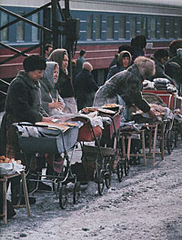

Cuando hoy leemos Ortodoxia (1908) de Chesterton,
nos extraña que alguien pudiera escribir eso y no ser católico.
Parece inevitable; y sin embargo el tipo recién entró a la Iglesia catorce años después, en 1922.
De C. S. Lewis uno podría decir algo parecido. [*]
Con la diferencia de que él no se salió del anglicanismo, ni
parece haber estado en camino.
¿Por qué? Vaya uno a saber.
En el blog de Amy (en inglés) hay un post sobre eso -con comentarios interesantes-, a raíz de una crítica de un libro de Joseph Pearce.
[* Hace poco comentábamos con un amigo
sobre la gran afinidad -de estilo y de espíritu-
de P. Kreeft (católico él) con C. S. Lewis; un parecido
que llega a resultarnos chocante. Y que también agrega alguna perplejidad al hecho de que Lewis no fuera católico]
Archivo por meses: noviembre 2004
Ejercicios unamunianos
Un breve ensayo sobre la «Vida de Don Quijote y Sancho«, de Unamuno; un escritor y un libro que quiero mucho.
El artículo trata, entre otras cosas, de cierto paralelo con
los ejercicios espirituales ignacianos (la biografía de San Ignacio, por Rivadeneyra, es una presencia constante
en el libro), y otros temas igualmente interesantes. Entre ellos, y de pasada: la religiosidad (el catolicismo, si quieren, por qué no) anticlerical de don Miguel.
Sustancias y accidentes
Difícil que lleguemos a ponernos de acuerdo, dijo Charly García. Y fácil que llegue a hartar a todos, digo yo;
y a equivocarme feo.
Pero el caso es que este tema me importa;
y me cuesta ser claro y conciso. Aguantarse.
Igual, advierto: esto son «trapitos sucios». Los lectores de afuera -no católicos o no argentinos- acaso harán mejor en pasar de largo; esto no es para ellos.
Como decíamos -y preveíamos: muchos correligionarios de por acá no comparten mi repudio al mensaje del mentado director de Cabildo (y todo lo que hay alrededor). A quien sólo critican en el tono, o estilo. Pero, sacando eso, el fondo, la sustancia -vienen a decir- el tipo está en lo cierto. (Juicio generalizable a otros escribientes del palo, por otro lado).
Lo cual presupone que damos por buena la siguiente proposición : «El tono es una cosa, la sustancia es otra; lo que realmente importa es lo segundo«.
¿Sí?
… Seguir leyendo
Igual, advierto: esto son «trapitos sucios». Los lectores de afuera -no católicos o no argentinos- acaso harán mejor en pasar de largo; esto no es para ellos.
Como decíamos -y preveíamos: muchos correligionarios de por acá no comparten mi repudio al mensaje del mentado director de Cabildo (y todo lo que hay alrededor). A quien sólo critican en el tono, o estilo. Pero, sacando eso, el fondo, la sustancia -vienen a decir- el tipo está en lo cierto. (Juicio generalizable a otros escribientes del palo, por otro lado).
Lo cual presupone que damos por buena la siguiente proposición : «El tono es una cosa, la sustancia es otra; lo que realmente importa es lo segundo«.
¿Sí?
… Seguir leyendo
Uno será tomado y otro dejado
Ayer, comienzo del Adviento, se leyó esto del evangelio de Lucas:
Yo lo leo así: en el día del Juicio se verá que la línea que divide los buenos de los malos, los fieles de los infieles, es insospechada; que atraviesa por el medio todas los grupos sociales, familiares, ideológicos y hasta religiosos. Que -para decirlo en términos bien chocantes- de dos que estén en la marcha gay, uno será tomado y otro dejado; y de los que estén defendiendo a la Catedral de los ataques de la marcha gay, lo mismo. O que -para decirlo en términos matemáticos- la coordenada Bien-Mal (o lo que viene a ser lo mismo: Verdad-Mentira) es ortogonal a todas la coordenadas sociales que los hombres medimos y usamos para juzgar.
Ya sé que esto sonará a muchos lectores (a mí mismo) demasiado fácil y relativista. Y ya sé que no es lo mismo cualquier religión, o cualquier idea sobre lo que está bien o mal; y que no se trata de que «nada es mejor, todo es igual». Ya sé, y ya sé que no sé nada, y que los Padres no me dan mucho apoyo que digamos …
Igual, eso es lo que me dicen a mí esas palabras, qué vamos a hacerle.
P.S. A varios ha molestado -me gusta tener críticos severos- esa frase final, por pueril, repetida e impertinente. Es cierto. Y recién estuve por sacarla. Pero la dejo, con esta salvedad: lo que quiere expresar no es una actitud tipo: «yo pienso lo que quiero, y no me importa si los sabios coinciden conmigo, y no tengo obligación de explicar o defender mi pensamiento». Más bien al contrario. Algo como «los sabios dicen otra cosa, así que lamentablemente mis pensamientos deben estar mal; para colmo, no tengo energías mentales como para o bien rectificar mi pensamiento o bien tratar de defenderlo». Qué vamos a hacerle.
Como sucedió en los días de Noé, así será también en los días del Hijo del hombre.
Comían, bebían, tomaban mujer o marido, hasta el día en que entró Noé en el arca; vino el diluvio y los hizo perecer a todos.
…
Yo os lo digo: aquella noche estarán dos en un mismo lecho: uno será tomado y el otro dejado;
habrá dos mujeres moliendo juntas: una será tomada y la otra dejada.
Dos estarán en el campo; el uno será tomado, y el otro dejado.
¿Cómo debe leerse esto último, de «uno será tomado y el otro dejado» ? Comían, bebían, tomaban mujer o marido, hasta el día en que entró Noé en el arca; vino el diluvio y los hizo perecer a todos.
…
Yo os lo digo: aquella noche estarán dos en un mismo lecho: uno será tomado y el otro dejado;
habrá dos mujeres moliendo juntas: una será tomada y la otra dejada.
Dos estarán en el campo; el uno será tomado, y el otro dejado.
Yo lo leo así: en el día del Juicio se verá que la línea que divide los buenos de los malos, los fieles de los infieles, es insospechada; que atraviesa por el medio todas los grupos sociales, familiares, ideológicos y hasta religiosos. Que -para decirlo en términos bien chocantes- de dos que estén en la marcha gay, uno será tomado y otro dejado; y de los que estén defendiendo a la Catedral de los ataques de la marcha gay, lo mismo. O que -para decirlo en términos matemáticos- la coordenada Bien-Mal (o lo que viene a ser lo mismo: Verdad-Mentira) es ortogonal a todas la coordenadas sociales que los hombres medimos y usamos para juzgar.
Ya sé que esto sonará a muchos lectores (a mí mismo) demasiado fácil y relativista. Y ya sé que no es lo mismo cualquier religión, o cualquier idea sobre lo que está bien o mal; y que no se trata de que «nada es mejor, todo es igual». Ya sé, y ya sé que no sé nada, y que los Padres no me dan mucho apoyo que digamos …
Igual, eso es lo que me dicen a mí esas palabras, qué vamos a hacerle.
P.S. A varios ha molestado -me gusta tener críticos severos- esa frase final, por pueril, repetida e impertinente. Es cierto. Y recién estuve por sacarla. Pero la dejo, con esta salvedad: lo que quiere expresar no es una actitud tipo: «yo pienso lo que quiero, y no me importa si los sabios coinciden conmigo, y no tengo obligación de explicar o defender mi pensamiento». Más bien al contrario. Algo como «los sabios dicen otra cosa, así que lamentablemente mis pensamientos deben estar mal; para colmo, no tengo energías mentales como para o bien rectificar mi pensamiento o bien tratar de defenderlo». Qué vamos a hacerle.
El defensor de Melania
Hablando de defensores…
Me informa Silvia desde San Juan sobre una serie de celebraciones (congreso, peregrinación…) a realizarse a mediados de diciembre en el sur de Italia, por el centenario de la muerte de Melania Calvat, la pastora que vio a la Virgen en la aparición de La Salette (Francia, 1846); acaso la primera de una abundante serie de apariciones «modernas» con muchos rasgos comunes, y cuyos casos más conocidos (y reconocidos) son los de Lourdes y Fátima. También se caracteriza por ser una de las apariciones discutidas, fue lentamente aceptada con muchos reparos y numerosos contradictores; aún hoy, muchos católicos la rechazan. La misma Melania parece haber tenido una personalidad contradictoria, por decirlo así…
Entre los defensores, el más incondicional y más enardecido debe haber sido nuestro amigo Leon Bloy, nacido el mismo año de la aparición y que le dedicó un par de libros. La de La Salette era una aparición a su medida, podría decirse, con su patetismo (la Virgen que llora) sus rasgos chocantes, su tono apocalíptico … y hasta sus toques anticlericales.
Entré pues al sitio buscando una mención a Bloy, y sólo encontré una en esta página. Irónicamente, (y por lo que creo entender del italiano) la mención es para lamentar que el proceso de beatificación de Melania haya sido tan difícil, por culpa de la defensa de Bloy… cuyo libro fue puesto en el Index!
No sé si será justo el reproche, (no original, por cierto); pero es un poco gracioso, y también un poco melancólico…
Me informa Silvia desde San Juan sobre una serie de celebraciones (congreso, peregrinación…) a realizarse a mediados de diciembre en el sur de Italia, por el centenario de la muerte de Melania Calvat, la pastora que vio a la Virgen en la aparición de La Salette (Francia, 1846); acaso la primera de una abundante serie de apariciones «modernas» con muchos rasgos comunes, y cuyos casos más conocidos (y reconocidos) son los de Lourdes y Fátima. También se caracteriza por ser una de las apariciones discutidas, fue lentamente aceptada con muchos reparos y numerosos contradictores; aún hoy, muchos católicos la rechazan. La misma Melania parece haber tenido una personalidad contradictoria, por decirlo así…
Entre los defensores, el más incondicional y más enardecido debe haber sido nuestro amigo Leon Bloy, nacido el mismo año de la aparición y que le dedicó un par de libros. La de La Salette era una aparición a su medida, podría decirse, con su patetismo (la Virgen que llora) sus rasgos chocantes, su tono apocalíptico … y hasta sus toques anticlericales.
Entré pues al sitio buscando una mención a Bloy, y sólo encontré una en esta página. Irónicamente, (y por lo que creo entender del italiano) la mención es para lamentar que el proceso de beatificación de Melania haya sido tan difícil, por culpa de la defensa de Bloy… cuyo libro fue puesto en el Index!
No sé si será justo el reproche, (no original, por cierto); pero es un poco gracioso, y también un poco melancólico…
Defensores de la (h)ostia
Me llegaron varios comentarios sobre el post de anteayer.
El tono promedio puede resumirse en:
«Sí, ese tipo y esa gente tiene un estilo demasiado exaltado. Pero no deberías agarrártelas con ellos, que son una minoría extremista, sin influencias ni representatividad. Es gastar energías en peleas internas sin relevancia. Después de todo, en la batalla que hoy es más urgente y más grave, los enemigos son otros. Y en cuanto a ir o no a la Catedral: es muy cómodo criticar, pero lo indicado y lo valiente era ir.«
Es un mero -y acaso impreciso- promedio, repito; hay gran varianza, naturalmente.
Seguiremos desarrollando el tema (por decirlo de alguna manera) en otros posts.
Lo cierto es que a veces, en lo que a ángulos de visión se refiere, me siento bastante lejos de mis cofrades lectores [*]… Me limito por ahora a notar un aspecto, tal vez lateral, pero que se me antoja ilustrativo: a nadie parece haberle chocado la exhortación de estos defensores del Santísimo Sacramento a «ir comulgados«, con esas alusiones a temibles requetés, rojos y cruzadas. Supongo entonces que, si digo que a mí eso me sonó más cercano a la blasfemia, más contrario al segundo mandamiento, que cualquier pintada gay… me ganaré un repudio unánime, por exagerado e injusto.
Bien, ya me lo he ganado.
* Supongo también que si digo que confío más en el criterio, conocimiento y buen sentido de varios de esos lectores que en el mío propio, lo tomarán como una afectación. Y algo de eso habrá. Lo digo, de todas maneras.
El tono promedio puede resumirse en:
«Sí, ese tipo y esa gente tiene un estilo demasiado exaltado. Pero no deberías agarrártelas con ellos, que son una minoría extremista, sin influencias ni representatividad. Es gastar energías en peleas internas sin relevancia. Después de todo, en la batalla que hoy es más urgente y más grave, los enemigos son otros. Y en cuanto a ir o no a la Catedral: es muy cómodo criticar, pero lo indicado y lo valiente era ir.«
Es un mero -y acaso impreciso- promedio, repito; hay gran varianza, naturalmente.
Seguiremos desarrollando el tema (por decirlo de alguna manera) en otros posts.
Lo cierto es que a veces, en lo que a ángulos de visión se refiere, me siento bastante lejos de mis cofrades lectores [*]… Me limito por ahora a notar un aspecto, tal vez lateral, pero que se me antoja ilustrativo: a nadie parece haberle chocado la exhortación de estos defensores del Santísimo Sacramento a «ir comulgados«, con esas alusiones a temibles requetés, rojos y cruzadas. Supongo entonces que, si digo que a mí eso me sonó más cercano a la blasfemia, más contrario al segundo mandamiento, que cualquier pintada gay… me ganaré un repudio unánime, por exagerado e injusto.
Bien, ya me lo he ganado.
* Supongo también que si digo que confío más en el criterio, conocimiento y buen sentido de varios de esos lectores que en el mío propio, lo tomarán como una afectación. Y algo de eso habrá. Lo digo, de todas maneras.
El reflejo de los comulgantes
Tim Powers es un escritor yanqui de fantasía,
católico,
cuyo nombre conocí por recomendaciones en blogs yanquis.
Hace poco terminé una novela suya, que encontré
en las mesas de usados de Parque Rivadavia.
Creo que no tuve suerte, el libro
(«La fuerza de su mirada«,
The stress of her regard)
no parece ser de sus mejores obras; o será que no pude engancharme con la idea… o que no es para mí. La cuestión
es que sus 490 páginas se me hicieron exasperantes e interminables.
Está bien escrito, no digo que no. La trama es muy original y audaz, no digo que no. Transcurre en la Europa del siglo XIX, y aparecen Byron, Shelley y Keats (no conozco casi nada de la poesía inglesa de ese tiempo, pero eso no fue problema). Todo gira en torno a vampirismos y demonios (lamias, sobre todo), súcubos e íncubos; sobrenaturalismos (o mejor, subnaturalismos) al por mayor y recreaciones de la mitología (la Esfinge de Tebas, el ojo de las Grayas, etc etc). Todo está llevado con pluma firme y bastante ingenio, pero -como decía un crítico por ahí- resulta un poco demasiado (a little too much) para mi gusto.
El libro abunda en «revelaciones» (apócrifas y delirantes) para iniciados; algunas más felices que otras. No sé si lo que sigue es invento de este Powers, o si es cosa vieja; de ser lo primero, me parece ingenioso. En todo caso, me hizo gracia:
Se trata de la bandejita que se usa (o se usaba… o debería usarse) en la misa durante la comunión de los fieles; se supone que su utilidad es evitar que, por accidente, una Hostia caiga al suelo cuando el sacerdote la pone en la boca del comulgante. En realidad, según el libro, la razón que originó esta costumbre es muy otra (téngase en cuenta que, siempre según la trama de la novela, el vampirismo fue una especie de epidemia en la Europa de los siglos post/renacentistas). El fin disimulado de la bandejita era evitar las comuniones sacrílegas de los vampiros… porque mirando el reflejo, el sacerdote podía verificar que el comulgante fuera un humano como Dios manda….
Está bien escrito, no digo que no. La trama es muy original y audaz, no digo que no. Transcurre en la Europa del siglo XIX, y aparecen Byron, Shelley y Keats (no conozco casi nada de la poesía inglesa de ese tiempo, pero eso no fue problema). Todo gira en torno a vampirismos y demonios (lamias, sobre todo), súcubos e íncubos; sobrenaturalismos (o mejor, subnaturalismos) al por mayor y recreaciones de la mitología (la Esfinge de Tebas, el ojo de las Grayas, etc etc). Todo está llevado con pluma firme y bastante ingenio, pero -como decía un crítico por ahí- resulta un poco demasiado (a little too much) para mi gusto.
El libro abunda en «revelaciones» (apócrifas y delirantes) para iniciados; algunas más felices que otras. No sé si lo que sigue es invento de este Powers, o si es cosa vieja; de ser lo primero, me parece ingenioso. En todo caso, me hizo gracia:
Se trata de la bandejita que se usa (o se usaba… o debería usarse) en la misa durante la comunión de los fieles; se supone que su utilidad es evitar que, por accidente, una Hostia caiga al suelo cuando el sacerdote la pone en la boca del comulgante. En realidad, según el libro, la razón que originó esta costumbre es muy otra (téngase en cuenta que, siempre según la trama de la novela, el vampirismo fue una especie de epidemia en la Europa de los siglos post/renacentistas). El fin disimulado de la bandejita era evitar las comuniones sacrílegas de los vampiros… porque mirando el reflejo, el sacerdote podía verificar que el comulgante fuera un humano como Dios manda….
Requetequés?
¿Nos metemos en aguas pantanosas ? Un ratito, nomás. Total…
La semana pasada me llegó -reenviado- el siguiente mail:
– El sábado pasado se realizó la «marcha del orgullo gay». En años pasados ha sucedido que algunos de los participantes -por llamarlos de alguna manera- han incluido entre sus manifestaciones festivas pintadas insultantes en el frente de la Catedral de Buenos Aires.
– El firmante es director de la dicha revista «Cabildo», icono esperpéntico de un sector -por llamarlo de alguna manera- de la derecha ideológica argentina, que suele (auto)denominarse «nacionalismo católico».
Aguas pantanosas, ya avisé.
La verdad es que la semana pasada yo tenía alguna leve intención de ir la Catedral (para cuidarla de los ataques gays, no para «dar testimonio de catolicismo militante»), pero este mail me disuadió inmediatamente. En un sentido, entonces, me alegro de haberlo recibido. Pero sólo en ese sentido.
(Continuará, probablemente.)
La semana pasada me llegó -reenviado- el siguiente mail:
Cabildo
Alguien tiene que decir la Verdad
Queridos amigos:
El sábado 20 -como ya es del dominio público- está previsto que haya un ataque a la Catedral, al igual que sucedió otras veces.
La diferencia es que esta vez, gracias a Dios, son muchos los que se han autoconvocado y convocado a otros para dar testimonio de catolicismo militante.
Personalmente, allí estaré. Hemos puesto con los amigos, como lugar de encuentro la Basílica de Nuestra Señora de la Merced, Reconquista 207, y como hora exacta las 16hs. Algunos estarán antes en la Plaza de Mayo para informarnos lo que sucede, pero a las 16 en punto, si no media un imprevisto, nos concentraremos en el sitio determinado. Desde allí caminaremos hacia la Catedral, para dar nuestro modesto apoyo.
En lo posible vengan comulgados. Por aquello que decían los rojos durante la Cruzada Española: «no hay enemigo más temible que un requeté recién comulgado»
Un abrazo
En Cristo y en la Patria
Antonio Caponnetto
Difundan este mensaje cuanto puedan
Las caprichosas negritas son mías. El resto, es del firmante (supongo). Para los de afuera, explicamos:Alguien tiene que decir la Verdad
Queridos amigos:
El sábado 20 -como ya es del dominio público- está previsto que haya un ataque a la Catedral, al igual que sucedió otras veces.
La diferencia es que esta vez, gracias a Dios, son muchos los que se han autoconvocado y convocado a otros para dar testimonio de catolicismo militante.
Personalmente, allí estaré. Hemos puesto con los amigos, como lugar de encuentro la Basílica de Nuestra Señora de la Merced, Reconquista 207, y como hora exacta las 16hs. Algunos estarán antes en la Plaza de Mayo para informarnos lo que sucede, pero a las 16 en punto, si no media un imprevisto, nos concentraremos en el sitio determinado. Desde allí caminaremos hacia la Catedral, para dar nuestro modesto apoyo.
En lo posible vengan comulgados. Por aquello que decían los rojos durante la Cruzada Española: «no hay enemigo más temible que un requeté recién comulgado»
Un abrazo
En Cristo y en la Patria
Antonio Caponnetto
Difundan este mensaje cuanto puedan
– El sábado pasado se realizó la «marcha del orgullo gay». En años pasados ha sucedido que algunos de los participantes -por llamarlos de alguna manera- han incluido entre sus manifestaciones festivas pintadas insultantes en el frente de la Catedral de Buenos Aires.
– El firmante es director de la dicha revista «Cabildo», icono esperpéntico de un sector -por llamarlo de alguna manera- de la derecha ideológica argentina, que suele (auto)denominarse «nacionalismo católico».
Aguas pantanosas, ya avisé.
La verdad es que la semana pasada yo tenía alguna leve intención de ir la Catedral (para cuidarla de los ataques gays, no para «dar testimonio de catolicismo militante»), pero este mail me disuadió inmediatamente. En un sentido, entonces, me alegro de haberlo recibido. Pero sólo en ese sentido.
(Continuará, probablemente.)
Esperando poquito
«El regreso más esperado«, dice La Nación/Rolling Stone, es el del indio Solari. Si ese es el tope de las esperanzas argentinas, habrá que deducir que estamos al borde de la desesperación.
Yo tengo esperanzas mejores, graciadió. Aunque casualmente también hay un regreso de por medio.
Yo tengo esperanzas mejores, graciadió. Aunque casualmente también hay un regreso de por medio.
Más a mi favor
Sucede a menudo, entre personas que se tratan
con cierta asiduidad: amigos, compañeros de trabajo o estudio…
Uno de ellos (digamos, A), una persona normal, comente una falta contra otro —uno de esos maltratos triviales y de poca monta que casi cualquiera comete casi todos los días: una palabra fuerte, una pequeña falta de paciencia, de delicadeza o de generosidad.
El otro (digamos, B), también una persona normal, no deja de sentir el maltrato pero no se muestra ofendido.
Ni se exigen disculpas, ni se ofrecen. Eso no ha sido nada, y la vida y la amistad siguen como antes.
Todo esto se explica, muy naturalmente, según en qué lugar estoy yo.
Cuando yo soy B, es que soy demasiado bueno. Soy incapaz de rencor y tolero las ofensas calladamente. No necesito reclamar disculpas.
Cuando soy A, es que soy demasiado bueno como para que se enojen conmigo por tan poca cosa. Todos me quieren —porque, repito, soy bueno— y automáticamente me perdonan todo. No necesito pedir disculpas.
Mi ángel de la guarda no parece muy satisfecho con esta explicación, que a mí me conforma plenamente. Pero ya se sabe: él siempre anda buscándole la quinta pata al gato.
Uno de ellos (digamos, A), una persona normal, comente una falta contra otro —uno de esos maltratos triviales y de poca monta que casi cualquiera comete casi todos los días: una palabra fuerte, una pequeña falta de paciencia, de delicadeza o de generosidad.
El otro (digamos, B), también una persona normal, no deja de sentir el maltrato pero no se muestra ofendido.
Ni se exigen disculpas, ni se ofrecen. Eso no ha sido nada, y la vida y la amistad siguen como antes.
Todo esto se explica, muy naturalmente, según en qué lugar estoy yo.
Cuando yo soy B, es que soy demasiado bueno. Soy incapaz de rencor y tolero las ofensas calladamente. No necesito reclamar disculpas.
Cuando soy A, es que soy demasiado bueno como para que se enojen conmigo por tan poca cosa. Todos me quieren —porque, repito, soy bueno— y automáticamente me perdonan todo. No necesito pedir disculpas.
Mi ángel de la guarda no parece muy satisfecho con esta explicación, que a mí me conforma plenamente. Pero ya se sabe: él siempre anda buscándole la quinta pata al gato.
Leon Bloy
Ayer en misa, cuando nada -pero nada!- hacía preverlo… el
cura citó a Leon Bloy. Y lo pronunció bien (leonbluá)
y explicó: «un escritor francés converso». Verdad
es que la cita
no fue muy precisa, ni muy impactante, ni muy bloy-siana (o como se diga).
Pero igual… todavía estoy reponiéndome de la impresión.
Vamos pues, a propósito de esto y de otras cosas, con algo de una carta de Leon Bloy a un amigo:
Vamos pues, a propósito de esto y de otras cosas, con algo de una carta de Leon Bloy a un amigo:
….Me ha escrito usted: «No me falta fe … Nadie tiene más amor que yo … Pocos hombres sienten más que yo el deseo
de la gloria de Dios«.
El santo que yo quisiera ser, le respondería:
—Mi querido P., amado de Jesús y de María ¿por qué no decir mejor conmigo, por qué no diremos juntos esto? : «Me falta fe …. Nadie tiene menos amor que yo… Pocos hombres sienten tan poco deseo de la gloria de Dios como yo«… Ah, cuán hermoso y cuán verdadero sería !
Si obedeciera usted a Nuestro Señor, que quiere ser comido todos los días, vería con claridad: no me habría escrito que «cree estar en la buena senda; que sólo puede reprocharse las debilidades cotidianas ; en suma, que no cree exigible un cambio radical en su manera de vivir«. Habría escrito exactamente lo contario, y al escribirlo hubiera sentido un deslumbramiento de amor, en lugar de tristeza y desolación.
¿Como no habría de comprenderlo ? A nada conduce decir que usted es un «mísero pecador». Lo es menos que yo, y nostros dos probablemente somos menos miserables pecadores que San Pablo antes del rayo.
Pero no se trata de eso. Se trata, sí, de obedecer a Dios; es decir, venderlo todo, abandonarlo todo, destruir en sí mismo el espíritu del mundo.
He aquí, querido amigo, lo que puedo decirle, de parte de «La que llora». Usted ha sido llamado, lo sé, lo veo, y tengo el deber de instruirlo al respecto. Los cristianos mundanos están inmóviles y satisfechos de sí mismos. Los otros, muy pocos, son torrentes siempre insatisfechos. Dios lo quiere a usted santo; no digo virtuoso ni intachable, que eso conviene a los burgueses, sino santo…. Quizá ignora que la conversión de la gente decente es incomparablemente más milagrosa que la conversión de los asesinos.
El santo que yo quisiera ser, le respondería:
—Mi querido P., amado de Jesús y de María ¿por qué no decir mejor conmigo, por qué no diremos juntos esto? : «Me falta fe …. Nadie tiene menos amor que yo… Pocos hombres sienten tan poco deseo de la gloria de Dios como yo«… Ah, cuán hermoso y cuán verdadero sería !
Si obedeciera usted a Nuestro Señor, que quiere ser comido todos los días, vería con claridad: no me habría escrito que «cree estar en la buena senda; que sólo puede reprocharse las debilidades cotidianas ; en suma, que no cree exigible un cambio radical en su manera de vivir«. Habría escrito exactamente lo contario, y al escribirlo hubiera sentido un deslumbramiento de amor, en lugar de tristeza y desolación.
¿Como no habría de comprenderlo ? A nada conduce decir que usted es un «mísero pecador». Lo es menos que yo, y nostros dos probablemente somos menos miserables pecadores que San Pablo antes del rayo.
Pero no se trata de eso. Se trata, sí, de obedecer a Dios; es decir, venderlo todo, abandonarlo todo, destruir en sí mismo el espíritu del mundo.
He aquí, querido amigo, lo que puedo decirle, de parte de «La que llora». Usted ha sido llamado, lo sé, lo veo, y tengo el deber de instruirlo al respecto. Los cristianos mundanos están inmóviles y satisfechos de sí mismos. Los otros, muy pocos, son torrentes siempre insatisfechos. Dios lo quiere a usted santo; no digo virtuoso ni intachable, que eso conviene a los burgueses, sino santo…. Quizá ignora que la conversión de la gente decente es incomparablemente más milagrosa que la conversión de los asesinos.
Mañana empiezo
La dicha biografía de Santa Isabel cuenta que,
apenas después de su muerte, su cuñado Conrado
tuvo una conversión súbita y se transformó
de enemigo en fervoroso defensor de Isabel, y uno de los impulsores de su
canonización.
Cuentan que el tipo, con su pasado no muy ejemplar de violencias y lujos, se cruzó un día en la calle con una prostituta; él le afeó su mala vida, y ella se excusó por su miseria. Cuentan que esa noche el hombre no podía dormirse, pensando en su propia vida, en la riqueza y sin Dios… Se prometió entonces a sí mismo: «Mañana seré otro hombre»; y se durmió.
Lo original es que éste cumplió la promesa, y cambió radicalmente de vida; según dicen, hasta entró a la orden franciscana, como terciario -igual que Isabel.
Se me dirá que la historia no es muy interesante que digamos. Y -aparte de los reparos históricos del Refutador de Leyendas que todos los modernos llevamos dentro- se me dirá que ni siquiera es edificante; no hay una diferencia esencial con el caso del fumador empedernido que un día se dice «desde mañana no fumo más» y lo cumple… Cosas de psicología, más que de religión, me dirán.
Digan lo que digan, estas historias nos impresionan. Esas conversiones que no se han quedado en buenos propósitos… nos da un poquito de dolor y un poquito de envidia; pero también un poquito de alegría, y de aliento.
Qué más quisiera uno que poder decirse una noche: «Mañana seré otro hombre», y que así sea…
Aquí saltará algún racionalista a reclamar distingos: ¿esa «conversión» es una cosa que sucede un día particular de la vida ? ; ¿o es algo que sucede continuamente a lo largo de toda la vida ? ; ¿o (¿y?) esa conversión «continua» se confunde con ese mismo anhelo de conversión «puntual»?
Bueno, es medianoche ahora, y no tengo ganas de distingos.
Yo, en verdad y con toda seriedad les digo, de lo único que realmente tengo ganas ahora es de ir a acostarme, y mañana ser otro.
(Y ya que estamos en la fiesta de Cristo Rey, terminando el año litúrgico, no es mala época para esos propósitos que otros se hacen el 31 de diciembre… Año nuevo, vida nueva. Con una ayudita de allá arriba, eso sí; y también de acá abajo, si a eso vamos).
Cuentan que el tipo, con su pasado no muy ejemplar de violencias y lujos, se cruzó un día en la calle con una prostituta; él le afeó su mala vida, y ella se excusó por su miseria. Cuentan que esa noche el hombre no podía dormirse, pensando en su propia vida, en la riqueza y sin Dios… Se prometió entonces a sí mismo: «Mañana seré otro hombre»; y se durmió.
Lo original es que éste cumplió la promesa, y cambió radicalmente de vida; según dicen, hasta entró a la orden franciscana, como terciario -igual que Isabel.
Se me dirá que la historia no es muy interesante que digamos. Y -aparte de los reparos históricos del Refutador de Leyendas que todos los modernos llevamos dentro- se me dirá que ni siquiera es edificante; no hay una diferencia esencial con el caso del fumador empedernido que un día se dice «desde mañana no fumo más» y lo cumple… Cosas de psicología, más que de religión, me dirán.
Digan lo que digan, estas historias nos impresionan. Esas conversiones que no se han quedado en buenos propósitos… nos da un poquito de dolor y un poquito de envidia; pero también un poquito de alegría, y de aliento.
Qué más quisiera uno que poder decirse una noche: «Mañana seré otro hombre», y que así sea…
Aquí saltará algún racionalista a reclamar distingos: ¿esa «conversión» es una cosa que sucede un día particular de la vida ? ; ¿o es algo que sucede continuamente a lo largo de toda la vida ? ; ¿o (¿y?) esa conversión «continua» se confunde con ese mismo anhelo de conversión «puntual»?
Bueno, es medianoche ahora, y no tengo ganas de distingos.
Yo, en verdad y con toda seriedad les digo, de lo único que realmente tengo ganas ahora es de ir a acostarme, y mañana ser otro.
(Y ya que estamos en la fiesta de Cristo Rey, terminando el año litúrgico, no es mala época para esos propósitos que otros se hacen el 31 de diciembre… Año nuevo, vida nueva. Con una ayudita de allá arriba, eso sí; y también de acá abajo, si a eso vamos).
Vidas de santos
Estuve leyendo una pequeña biografía de Santa Isabel de
Hungría,
cuya fiesta fue la semana pasada
y de quien nada sabía.
El librito, de Fray Miglioranza, (argentino contemporáneo) no es una obra maestra; literariamente mediocre, muchas torpezas y lugares comunes (repetidos a veces dentro de la misma página), retórica levemente exasperante por momentos («...ha iluminado su siglo con los más puros fulgores… «, «..sería nuestro deseo ofrecer al disfrute de nuestros lectores una amplia radiografía mística; pero por amor a la brevedad…» , «… las más sublimes elevaciones espirituales… « etc etc etc … ).
Pero claro es que tiene mucho mejor sentido común y llaneza de expresión que aquellas espantosas hagiografías de un siglo atrás.
Y, por sobre todo, la vida de los santos suele imponerse a los defectos de los hagiógrafos (como la obra de los grandes escritores se impone a los defectos de los traductores).
Así, y con todo, logró atraparme y —creo— hacerme algún bien.
Recuerdo una carta de Leon Bloy —más sensible que yo, por cierto, a los defectos de estilo— aconsejando a un «dirigido espiritual», un hombre de formación intelectual que se sentía atraído por el catolicismo, pero también repelido por las consabidas dificultades. Decía Bloy (cito de memoria) «…sobre todo, lea muchas vidas de santos; atibórrese de esos libros, cuanto más imbéciles y pueriles le parezcan, mejor. Es el mejor consejo que puedo darle.»
No estoy seguro de que sea buen consejo, en general. (y si no recuerdo mal, en ese caso particular no le fue muy bien). Pero me gusta.
El librito, de Fray Miglioranza, (argentino contemporáneo) no es una obra maestra; literariamente mediocre, muchas torpezas y lugares comunes (repetidos a veces dentro de la misma página), retórica levemente exasperante por momentos («...ha iluminado su siglo con los más puros fulgores… «, «..sería nuestro deseo ofrecer al disfrute de nuestros lectores una amplia radiografía mística; pero por amor a la brevedad…» , «… las más sublimes elevaciones espirituales… « etc etc etc … ).
Pero claro es que tiene mucho mejor sentido común y llaneza de expresión que aquellas espantosas hagiografías de un siglo atrás.
Y, por sobre todo, la vida de los santos suele imponerse a los defectos de los hagiógrafos (como la obra de los grandes escritores se impone a los defectos de los traductores).
Así, y con todo, logró atraparme y —creo— hacerme algún bien.
Recuerdo una carta de Leon Bloy —más sensible que yo, por cierto, a los defectos de estilo— aconsejando a un «dirigido espiritual», un hombre de formación intelectual que se sentía atraído por el catolicismo, pero también repelido por las consabidas dificultades. Decía Bloy (cito de memoria) «…sobre todo, lea muchas vidas de santos; atibórrese de esos libros, cuanto más imbéciles y pueriles le parezcan, mejor. Es el mejor consejo que puedo darle.»
No estoy seguro de que sea buen consejo, en general. (y si no recuerdo mal, en ese caso particular no le fue muy bien). Pero me gusta.
Está todo mal; pero el resto es inobjetable
Otra vez Castellani
y Kierkegaard… Resulta que muchos profesores de filosofía (católicos, por ej.),
a la hora de enjuiciar la obra del danés, trataban de
mostrarse entendidos y al mismo tiempo reticentes
(somos inteligentes y entendemos que es un grande, sí; pero también somos muy ortodoxos y la tenemos clara, así que no le vamos a dar el nihil obstat a un tipo
tan extravagante). Y sentenciaban entonces : «Con Kierkegaard uno puede estar de acuerdo con varias
cosas, pero no puede estar de acuerdo con todo«.
A Castellani estos mediocres, incapaces de libertad intelectual, lo fastidiaban. Y, medio en broma medio en serio, retrucaba: «Es exactamente al revés. Con Kierkegaard hay que estar de acuerdo con todo. Con algunas cosas, en cambio, hay que estar en desacuerdo.«.
Con esta modesta paradoja [*] quería significar que el pensamiento de Kierkegaard sólo se sostiene en conjunto; que, tomadas sueltas, muchas de sus afirmaciones son falsas o heterodoxas; pero que son verdaderas dentro del todo.
Y no se trata de mezclar agua fría con agua caliente para tener agua tibia; la ortodoxia no es tibieza, y no se produce mezclando herejías de signo opuesto. Pero sí que la ortodoxia mucha veces se nos presenta como afirmaciones violenta y aparentemente opuestas (y hasta heréticas) ligadas por un único espíritu de Verdad.
Y bueno. Si es así, también se dará lo contrario, pienso ahora … a cuento -injustamente, tal vez- de Balmes, quien ha suscitado defensores que me preguntan qué encuentro de erróneo -«concretamente»- en sus escritos.
Bien puede ser que una obra intelectual sea falsa, no porque lo sea una determinada proposición o argumento, sino el todo. O sea: el espíritu.
Y no digo que sea el caso del pobre Balmes; a quien al fin y al cabo conozco demasiado poco como para juzgar. (Aunque, para decirlo todo, ésa es la impresión que me da, sí).
Me dirá alguno (o lo pensará) que es bastante irresponsable y frívolo de mi parte, ponerme a hablar con tanta sentenciosidad de temas que me quedan demasiado grandes. Pero sí, hombre, de eso se trata. Este blog es, ante todo -y como casi todos- un alegre acto de irresponsabilidad y frivolidad.
Si alguien saca algo que le sirva, me alegro. Pero esto no es para tomar en serio. Ni en parte, ni en todo.
[* ¿No es esto aplicable también a muchos dichos del mismo Jesucristo?]
A Castellani estos mediocres, incapaces de libertad intelectual, lo fastidiaban. Y, medio en broma medio en serio, retrucaba: «Es exactamente al revés. Con Kierkegaard hay que estar de acuerdo con todo. Con algunas cosas, en cambio, hay que estar en desacuerdo.«.
Con esta modesta paradoja [*] quería significar que el pensamiento de Kierkegaard sólo se sostiene en conjunto; que, tomadas sueltas, muchas de sus afirmaciones son falsas o heterodoxas; pero que son verdaderas dentro del todo.
Y no se trata de mezclar agua fría con agua caliente para tener agua tibia; la ortodoxia no es tibieza, y no se produce mezclando herejías de signo opuesto. Pero sí que la ortodoxia mucha veces se nos presenta como afirmaciones violenta y aparentemente opuestas (y hasta heréticas) ligadas por un único espíritu de Verdad.
Y bueno. Si es así, también se dará lo contrario, pienso ahora … a cuento -injustamente, tal vez- de Balmes, quien ha suscitado defensores que me preguntan qué encuentro de erróneo -«concretamente»- en sus escritos.
Bien puede ser que una obra intelectual sea falsa, no porque lo sea una determinada proposición o argumento, sino el todo. O sea: el espíritu.
Y no digo que sea el caso del pobre Balmes; a quien al fin y al cabo conozco demasiado poco como para juzgar. (Aunque, para decirlo todo, ésa es la impresión que me da, sí).
Me dirá alguno (o lo pensará) que es bastante irresponsable y frívolo de mi parte, ponerme a hablar con tanta sentenciosidad de temas que me quedan demasiado grandes. Pero sí, hombre, de eso se trata. Este blog es, ante todo -y como casi todos- un alegre acto de irresponsabilidad y frivolidad.
Si alguien saca algo que le sirva, me alegro. Pero esto no es para tomar en serio. Ni en parte, ni en todo.
[* ¿No es esto aplicable también a muchos dichos del mismo Jesucristo?]
Tiempos honestos
Puede ofender a algunas personas, pero la sexualidad
en aquella época era una cosa diferente. Moralidad pre-cristiana.
…
Alejandro vivió en unos tiempos más honestos.
¿Quién lo dice? …
Alejandro vivió en unos tiempos más honestos.
Oliver Stone.
¿A quién se lo dice?
A la revista Playboy.
¿Por qué lo dice?
Porque acaba de filmar ($150 millones) una película gay sobre Alejandro Magno.
Gerard: RIP
Hoy a la mañana murió Gerard de Blog for Lovers.
Era uno de los blogs católicos yanquis más conocidos y más antiguos,
y albergaba St Blog’s,
un listado de blogs católicos.
Lo que más me gustaba del blog de Gerard, era el espíritu con que Gerard posteaba. Espíritu de generosidad y alabanza.
Lo conocí -es un decir- hace unos cuantos años (1999?), cuando esto de los blogs no existía, por su página Praise of glory, que me encantó, por los mismos motivos dichos. Y porque no es muy usual encontrar ese espíritu junto con un santoral tan rico y tan afín (y libresco, también) … desde Leon Bloy hasta Simone Weil, pasando por Newman, Chesterton, y tantos otros amigos comunes. Le escribí entonces para tantear la posibilidad de hacer una versión en español de su sitio (proyecto un poco delirante… eran otros tiempos, los días jóvenes e ingenuos de Internet), y cruzamos algunos mails.
Digamos entonces para terminar:
Lo que más me gustaba del blog de Gerard, era el espíritu con que Gerard posteaba. Espíritu de generosidad y alabanza.
Lo conocí -es un decir- hace unos cuantos años (1999?), cuando esto de los blogs no existía, por su página Praise of glory, que me encantó, por los mismos motivos dichos. Y porque no es muy usual encontrar ese espíritu junto con un santoral tan rico y tan afín (y libresco, también) … desde Leon Bloy hasta Simone Weil, pasando por Newman, Chesterton, y tantos otros amigos comunes. Le escribí entonces para tantear la posibilidad de hacer una versión en español de su sitio (proyecto un poco delirante… eran otros tiempos, los días jóvenes e ingenuos de Internet), y cruzamos algunos mails.
Digamos entonces para terminar:
Que el Señor Jesucristo
esté a tu lado para defenderte,
dentro tuyo para sanarte,
delante tuyo para conducirte,
detrás tuyo para guiarte,
encima tuyo para bendecirte.
Que nuestro Señor, nuestra Señora,
todos los ángeles y todos los santos,
sean tu compañía y tu gozo,
camino a la gloria
del Padre y del Hijo y del Espíritu Santo.
Reza por mí, peregrino, yo me acordaré de ti.
esté a tu lado para defenderte,
dentro tuyo para sanarte,
delante tuyo para conducirte,
detrás tuyo para guiarte,
encima tuyo para bendecirte.
Que nuestro Señor, nuestra Señora,
todos los ángeles y todos los santos,
sean tu compañía y tu gozo,
camino a la gloria
del Padre y del Hijo y del Espíritu Santo.
Reza por mí, peregrino, yo me acordaré de ti.
Por ejemplo: Balmes
Recuerdo haber hojeado hace mucho tiempo,
un poco al azar (como al azar
se encontraba ese libro en la biblioteca de mi padre),
«El criterio» de Balmes. Recuerdo estas
páginas sobre la igualdad, y la sensación de furia y desprecio
que sentí leyéndolas. Recuerdo que en esos tiempos
no era cristiano, y leía a Cortázar y a Nietzsche. Claro.
Pero hoy, que soy cristiano y he cambiado radicalmente mis aprecios y mis desprecios… resulta que Balmes me sigue pareciendo tan ganso como entonces. Y acaso menos despreciable, por más peligroso.
Ese fragmento podría ser un buen anti-ejemplo de lo que decía antes, sobre hacerse cargo. Balmes se encuentra con gentes que afirman que «los hombres somos iguales», y desdeñosamente se dedica a «reducir a polvo» estas palabras. Claro, es un slogan que no es de su bando; ergo, no vale le pena tratar de entender cuál es su fondo de verdad. Son palabras vacías y nada más.
Si no me equivoco, Balmes es (¿o era?) considerado como uno de los más grandes pensadores católicos españoles del siglo XIX. Por lo cual, de ser mi juicio certero (cosa muy dudosa, le garanto) sería un caso doblemente representativo de algunas cosillas sobre las que vengo discurriendo estos días.
Veamos, ya que estamos… ¿No tendrá algo que decir Balmes respecto de la otra cuestión, de la mejoría que trajo al mundo la venida de Cristo ?
Sí, cómo no:
Habrá católicos que tengan distintas opiniones sobre esta manera de encarar la cuestión. Algunos (tradicionalistas, supongo) dirán que es así nomás, aunque sea un discurso impopular (o políticamente incorrecto). Otros dirán que en buena medida es o puede ser verdad, pero que el tono hoy debe resultar insufrible a cualquiera. Y otros (progresistas, supongo) dirán que es un repugnante ejemplo del triunfalismo y provincialismo del catolicismo preconciliar.
Si es así, (y dejando de lado por ahora los esquemas pre/post conciliares) en el repudio, coincido —por una vez!— con los progresistas.
No se trata tanto de la verdad (muy difícil de decidir) del hecho esgrimido como argumento (que la civilización cristiana es superior al paganismo), se trata más bien de cómo se esgrime este hecho para argumentar (no importa que la argumentación sea «exteriorizada»; lo mismo da que sea una argumentación interna, y aun apenas conciente). Se trata del espíritu, de qué significa para uno «ser cristiano».
Temo que cada vez que uno dice esos discursos -o asiente a ellos- se está poniendo fuera de la verdad. Gravemente fuera.
Y no veo mucha prevención, ni meaculpas (históricos o personales) por estos pecados contra la verdad.
Si escuchamos que alguien dice «La civilización pagana es evidentemente superior al cristianismo«, saltamos a protestar: es una estupidez y una mentira, decimos.
Si escuchamos que alguien dice «La civilización cristiana es evidentemente superior al paganismo«… bueno, tal vez no estamos muy seguros de que sea verdad (por cierto, no «evidente») .. pero como eso lo dice uno de los nuestros, peleando de nuestro, lado contra los malos… no protestamos (ni siquiera en nuestro interior). Si no es estrictamente verdad, nos decimos, al menos no se trata de una falsedad malintencionada y dañina…como la otra.
Ahora, si lo pensamos un poquito… es exactamente al revés… ¿no?
Si el cristianismo no es un partido, si Cristo es la Verdad, entonces las falsedades dichas a favor del cristianismo son mucho más dañinas que las falsedades dichas en contra.
Dañinas para el cristianismo y para uno, digo yo, no sé …
Pero hoy, que soy cristiano y he cambiado radicalmente mis aprecios y mis desprecios… resulta que Balmes me sigue pareciendo tan ganso como entonces. Y acaso menos despreciable, por más peligroso.
Ese fragmento podría ser un buen anti-ejemplo de lo que decía antes, sobre hacerse cargo. Balmes se encuentra con gentes que afirman que «los hombres somos iguales», y desdeñosamente se dedica a «reducir a polvo» estas palabras. Claro, es un slogan que no es de su bando; ergo, no vale le pena tratar de entender cuál es su fondo de verdad. Son palabras vacías y nada más.
Si no me equivoco, Balmes es (¿o era?) considerado como uno de los más grandes pensadores católicos españoles del siglo XIX. Por lo cual, de ser mi juicio certero (cosa muy dudosa, le garanto) sería un caso doblemente representativo de algunas cosillas sobre las que vengo discurriendo estos días.
Veamos, ya que estamos… ¿No tendrá algo que decir Balmes respecto de la otra cuestión, de la mejoría que trajo al mundo la venida de Cristo ?
Sí, cómo no:
…¿Qué cambio social produjo este Hombre [Jesús]? Recordad lo que era el mundo romano y ved lo que es el mundo actual; mirad lo que son los pueblos donde no ha penetrado el cristianismo y lo que son aquellos que han estado siglos bajo su enseñanza y la conservan todavía, aunque algunos alterada y desfigurada.
…
El cristianismo ha contado entre sus hijos a los hombres más esclarecidos por su virtud y sabiduría; ningún pueblo antiguo ni moderno se ha elevado a tan alto grado de civilización y cultura como los que lo han profesado; sobre ninguna religión se ha disputado ni escrito tanto como sobre la cristiana; las bibliotecas están llenas de obras maestras de crítica y de filosofía debidas a hombres que sometieron humildemente su entendimiento en obsequio de la fe; luego esa religión está a cubierto de los ataques que se pueden dirigir contra las que han nacido y prosperado entre pueblos groseros e ignorantes. Ella tiene, pues, todos los caracteres de verdadera, de divina.
Y vale la pena leer el contexto. …
El cristianismo ha contado entre sus hijos a los hombres más esclarecidos por su virtud y sabiduría; ningún pueblo antiguo ni moderno se ha elevado a tan alto grado de civilización y cultura como los que lo han profesado; sobre ninguna religión se ha disputado ni escrito tanto como sobre la cristiana; las bibliotecas están llenas de obras maestras de crítica y de filosofía debidas a hombres que sometieron humildemente su entendimiento en obsequio de la fe; luego esa religión está a cubierto de los ataques que se pueden dirigir contra las que han nacido y prosperado entre pueblos groseros e ignorantes. Ella tiene, pues, todos los caracteres de verdadera, de divina.
Habrá católicos que tengan distintas opiniones sobre esta manera de encarar la cuestión. Algunos (tradicionalistas, supongo) dirán que es así nomás, aunque sea un discurso impopular (o políticamente incorrecto). Otros dirán que en buena medida es o puede ser verdad, pero que el tono hoy debe resultar insufrible a cualquiera. Y otros (progresistas, supongo) dirán que es un repugnante ejemplo del triunfalismo y provincialismo del catolicismo preconciliar.
Si es así, (y dejando de lado por ahora los esquemas pre/post conciliares) en el repudio, coincido —por una vez!— con los progresistas.
No se trata tanto de la verdad (muy difícil de decidir) del hecho esgrimido como argumento (que la civilización cristiana es superior al paganismo), se trata más bien de cómo se esgrime este hecho para argumentar (no importa que la argumentación sea «exteriorizada»; lo mismo da que sea una argumentación interna, y aun apenas conciente). Se trata del espíritu, de qué significa para uno «ser cristiano».
Temo que cada vez que uno dice esos discursos -o asiente a ellos- se está poniendo fuera de la verdad. Gravemente fuera.
Y no veo mucha prevención, ni meaculpas (históricos o personales) por estos pecados contra la verdad.
Si escuchamos que alguien dice «La civilización pagana es evidentemente superior al cristianismo«, saltamos a protestar: es una estupidez y una mentira, decimos.
Si escuchamos que alguien dice «La civilización cristiana es evidentemente superior al paganismo«… bueno, tal vez no estamos muy seguros de que sea verdad (por cierto, no «evidente») .. pero como eso lo dice uno de los nuestros, peleando de nuestro, lado contra los malos… no protestamos (ni siquiera en nuestro interior). Si no es estrictamente verdad, nos decimos, al menos no se trata de una falsedad malintencionada y dañina…como la otra.
Ahora, si lo pensamos un poquito… es exactamente al revés… ¿no?
Si el cristianismo no es un partido, si Cristo es la Verdad, entonces las falsedades dichas a favor del cristianismo son mucho más dañinas que las falsedades dichas en contra.
Dañinas para el cristianismo y para uno, digo yo, no sé …
Santoral de novela
Ya he contado de mi excesiva amistad con los personajes
de novelas. Muchos -y no sólo los buenos– me han marcado, son referencias constantes, como personajes reales conocidas; exagerando (poco o nada), digamos que me costaría imaginar mi vida sin ellos.
Se me cruzó estos días la vana cuestión de elegir la flor más linda del jardín: el mejor personaje de ficción que haya dado la literatura, el más grande, el compañero y guía más fiel y más querible.
Dentro de mi estrecho campo de conocimiento, y provisionalmente, podría mentar a Alioscha Karamazov, (de Los Hermanos Karamazov – Dostoyevsky) y a Don Quijote … Sí, sin dudas…
Pero, con la mano en el corazón tengo que confesar: a Bertie Wooster no le gana nadie.
Se me cruzó estos días la vana cuestión de elegir la flor más linda del jardín: el mejor personaje de ficción que haya dado la literatura, el más grande, el compañero y guía más fiel y más querible.
Dentro de mi estrecho campo de conocimiento, y provisionalmente, podría mentar a Alioscha Karamazov, (de Los Hermanos Karamazov – Dostoyevsky) y a Don Quijote … Sí, sin dudas…
Pero, con la mano en el corazón tengo que confesar: a Bertie Wooster no le gana nadie.
Reacomodador de baldosas
En misa de domingo, resistiendo a duras penas —y de pie—
un sermón soporífero y edulcorado, miro por enésima
vez el piso de la iglesia.
Y mi cabeza se dedica a reacomodar las baldosas.
Lo hago automáticamente, casi irrestiblemente. Una especie de manía o compulsión mental.
Se trata de redistribuir las baldosas de distinto color, sea para variar o para corregir el dibujo. El piso de mi iglesia parroquial, cuyo dibujo copio al lado, tiene un defecto; dos baldosas intercambiadas, fáciles de detectar.
No sé qué interpretación dará un psicoanalista a esto, no sé si será raro o frecuente. Lo cierto es que aunque es cosa muy antigua en mí (me recuerdo, de chico, caminando las veredas de la plaza de pueblo, con baldosas rojas y amarillas), no hace mucho tomé conciencia.
Tal vez sea cosa de cabeza matemáticas (geométricas), me digo. No sé.
Las reglas son curiosamente estrictas: no vale pintar baldosas, sólo vale re-ubicarlas.
Bueno… En algunos casos nos permitimos cortar las baldosas por la mitad. Pero sólo en el caso de sermones más largos de lo habitual.
Mi ángel de la guarda me reprende, y yo le explico que es una forma inofensiva de canalizar mis ansias de reformar la Iglesia. Y no le hace ninguna gracia.
Pienso entonces en retrucarle que siempre será más saludable reacomodar baldosas que escuchar el sermón; pero después lo pienso mejor y no le digo nada.
Y mi cabeza se dedica a reacomodar las baldosas.
Lo hago automáticamente, casi irrestiblemente. Una especie de manía o compulsión mental.
Se trata de redistribuir las baldosas de distinto color, sea para variar o para corregir el dibujo. El piso de mi iglesia parroquial, cuyo dibujo copio al lado, tiene un defecto; dos baldosas intercambiadas, fáciles de detectar.
No sé qué interpretación dará un psicoanalista a esto, no sé si será raro o frecuente. Lo cierto es que aunque es cosa muy antigua en mí (me recuerdo, de chico, caminando las veredas de la plaza de pueblo, con baldosas rojas y amarillas), no hace mucho tomé conciencia.
Tal vez sea cosa de cabeza matemáticas (geométricas), me digo. No sé.
Las reglas son curiosamente estrictas: no vale pintar baldosas, sólo vale re-ubicarlas.
Bueno… En algunos casos nos permitimos cortar las baldosas por la mitad. Pero sólo en el caso de sermones más largos de lo habitual.
Mi ángel de la guarda me reprende, y yo le explico que es una forma inofensiva de canalizar mis ansias de reformar la Iglesia. Y no le hace ninguna gracia.
Pienso entonces en retrucarle que siempre será más saludable reacomodar baldosas que escuchar el sermón; pero después lo pienso mejor y no le digo nada.
Apologías y rechazos
Algún que otro español se ha molestado un poco
por esto
que dije. Está bien.
Y alguno que otro ha postulado a los mártires del siglo XX como uno de esos frutos que yo echaba de menos. Está bien.
Bah; no sé si está bien. La verdad, y con perdón, a mí eso no me produce demasiado entusiasmo, en ese plano. Y (con esta probable blasfemia me termino de ganar las simpatías de mis lectores) yo preferiría que España en el último siglo contara con menos mártires y con algún Chesterton, por ejemplo.
Insisto, de todas maneras, en que si el panorama lo veo negro, no lo estoy mirando desde arriba, ni siquiera desde afuera.
¿Hablamos un rato del celo evangelizador del catolicismo hispano actual? Mejor, otro día. (Mientras tanto, vayan buscándome una Biblia española católica en Internet).
A otra cosa. Varios me han criticado por falta de síntesis, claridad y sustancia. Y es justo. Es lo que hay, vio…
Y un lector me tira los nombres de Santo Tomás de Aquino y de Juan Pablo II como ejemplos de otros que «se han hecho cargo»…
No estoy seguro[*], pero es muy posible.
[* Por cierto, cada vez estoy menos seguro de todo. Impresiona, cómo al pasar los años uno va sabiendo menos cosas -es decir, descubriendo que nunca las supo-. Cuántas opiniones tan firmes tenía uno en la adolescencia, sobre política, moral, estética… qué sabios éramos. Cuando yo era más joven, leía que esto iba sucediendo al acercarse uno a la vejez: «sólo sé que no sé nada», o algo por el estilo. Y sospechaba que era una mera afectación. Pareciera que no —espero que no, bah—. Al menos, siento que tengo la más mínima gana de recuperar aquellas sabidurías adolescentes. De eso, casi sólo de eso, estoy seguro]
Y alguno que otro ha postulado a los mártires del siglo XX como uno de esos frutos que yo echaba de menos. Está bien.
Bah; no sé si está bien. La verdad, y con perdón, a mí eso no me produce demasiado entusiasmo, en ese plano. Y (con esta probable blasfemia me termino de ganar las simpatías de mis lectores) yo preferiría que España en el último siglo contara con menos mártires y con algún Chesterton, por ejemplo.
Insisto, de todas maneras, en que si el panorama lo veo negro, no lo estoy mirando desde arriba, ni siquiera desde afuera.
¿Hablamos un rato del celo evangelizador del catolicismo hispano actual? Mejor, otro día. (Mientras tanto, vayan buscándome una Biblia española católica en Internet).
A otra cosa. Varios me han criticado por falta de síntesis, claridad y sustancia. Y es justo. Es lo que hay, vio…
Y un lector me tira los nombres de Santo Tomás de Aquino y de Juan Pablo II como ejemplos de otros que «se han hecho cargo»…
No estoy seguro[*], pero es muy posible.
[* Por cierto, cada vez estoy menos seguro de todo. Impresiona, cómo al pasar los años uno va sabiendo menos cosas -es decir, descubriendo que nunca las supo-. Cuántas opiniones tan firmes tenía uno en la adolescencia, sobre política, moral, estética… qué sabios éramos. Cuando yo era más joven, leía que esto iba sucediendo al acercarse uno a la vejez: «sólo sé que no sé nada», o algo por el estilo. Y sospechaba que era una mera afectación. Pareciera que no —espero que no, bah—. Al menos, siento que tengo la más mínima gana de recuperar aquellas sabidurías adolescentes. De eso, casi sólo de eso, estoy seguro]
Civilización y barbarie

Me han prestado algunos ejemplares de la
National Geographic. Aunque lejos de ser un devoto o un conocedor
de esas cosas, la revista me gusta. Me gusta el concepto
(con perdón de uso impropio de la palabra) y el profesionalismo
(eso de, puestos a hacer algo, tener en claro qué se está
haciendo y esforzarse en hacerlo con la mejor calidad posible),
que se echa tanto de menos por estos lugares.
[La foto es de unas mujeres en Rusia (sur-este; el transiberiano de fondo) en unos puestos armados con cochecitos de bebé, vendiendo comida casera].
El tema no es lo mío, ya queda dicho. Más de un amigo ha tratado de despertarme el interés por viajar, pero no hay caso. No sirvo para eso. Me quedo con el modesto placer de conocer algunas cosas de nuestro mundo leyendo revistas …cómodamente, mientras tomo mate y escucho la lluvia de domingo que cae sobre mi Buenos Aires querido.
Imagino que en tiempos pasados conocer pueblos exóticos (aunque sea a través de revistas o relatos) provocaba emociones más fuertes. Imagino que los hombres «civilizados» de un par de siglos atrás podían sentir una impresión distinta al conocer algunas costumbres «salvajes»; incluso alguna sabrosa dosis de espanto y escándalo, acompañado del alivio de vivir en un pueblo culto…
Hoy de eso quedará poco. Por ideología (si no hay hombres superiores, tampoco hay culturas superiores; la reivinicación de los indígenas; el primitivismo asociado a la inocencia , etc) y también por la realidad de los tiempos (el mundo es más chico, nos conocemos más, y estamos menos diferenciados), hoy la gente no se escandaliza así nomás.
Casi escribo «no nos escandalizamos»; pero la primera persona sería un poco mentirosa. Será que yo no estoy muy integrado al sentir del moderno lector de la National Geographic, será que me falta un poco de educación (pública)… la cuestión es que yo sí a veces me espanto y me escandalizo cuando me entero de la barbarie de otros pueblos. Y hasta llego a alegrame de vivir en un país culto y civilizado (en serio!). Me dirán que es un prejuicio tonto, que todas las naciones están a igual distancia de Dios, etc. No digo que no, no sé; digo la sensación que me provoca, nomás.
¿Por ejemplo ? Esta nota dedicada a un país exótico. Una nación «limpia y próspera» de «luteranos sin religión» (lo dice el periodista; y Kierkegaard también lo había dicho, o algo parecido ; pero en aquel entonces no le creían). El periodista dice que «se trata del ideal que casi todos tienen de la Nación Más Perfecta Del Mundo».
[La foto es de unas mujeres en Rusia (sur-este; el transiberiano de fondo) en unos puestos armados con cochecitos de bebé, vendiendo comida casera].
El tema no es lo mío, ya queda dicho. Más de un amigo ha tratado de despertarme el interés por viajar, pero no hay caso. No sirvo para eso. Me quedo con el modesto placer de conocer algunas cosas de nuestro mundo leyendo revistas …cómodamente, mientras tomo mate y escucho la lluvia de domingo que cae sobre mi Buenos Aires querido.
Imagino que en tiempos pasados conocer pueblos exóticos (aunque sea a través de revistas o relatos) provocaba emociones más fuertes. Imagino que los hombres «civilizados» de un par de siglos atrás podían sentir una impresión distinta al conocer algunas costumbres «salvajes»; incluso alguna sabrosa dosis de espanto y escándalo, acompañado del alivio de vivir en un pueblo culto…
Hoy de eso quedará poco. Por ideología (si no hay hombres superiores, tampoco hay culturas superiores; la reivinicación de los indígenas; el primitivismo asociado a la inocencia , etc) y también por la realidad de los tiempos (el mundo es más chico, nos conocemos más, y estamos menos diferenciados), hoy la gente no se escandaliza así nomás.
Casi escribo «no nos escandalizamos»; pero la primera persona sería un poco mentirosa. Será que yo no estoy muy integrado al sentir del moderno lector de la National Geographic, será que me falta un poco de educación (pública)… la cuestión es que yo sí a veces me espanto y me escandalizo cuando me entero de la barbarie de otros pueblos. Y hasta llego a alegrame de vivir en un país culto y civilizado (en serio!). Me dirán que es un prejuicio tonto, que todas las naciones están a igual distancia de Dios, etc. No digo que no, no sé; digo la sensación que me provoca, nomás.
¿Por ejemplo ? Esta nota dedicada a un país exótico. Una nación «limpia y próspera» de «luteranos sin religión» (lo dice el periodista; y Kierkegaard también lo había dicho, o algo parecido ; pero en aquel entonces no le creían). El periodista dice que «se trata del ideal que casi todos tienen de la Nación Más Perfecta Del Mundo».
…La vida cotidiana se basa en la predecibilidad.
Si el horario dice que el tren sale de Kalmpenborg a las 7:06
y llega a Osterport a las 7:27, precisamente así será; y si uno
ha invitado a Jens y Camilla a cenar a las 7:30, exactamente
a esa hora estarán llamando a la puerta, no un par de minutos
después. Y cuando abrimos la puerta, ellos darán por supuesto
que nosotros también hemos arreglado nuestro tiempo,
que no estaremos corriendo de un lado para el otro
recogiendo medias sucias, que la cena estará bajo control,
las velas encendidas, el vino frío, y los anfitriones preparados
para congeniar.
Para los dinamarqueses, esta es la manera correcta de vivir; para un americano [y para un argentino no te digo nada] al principio parece maravilloso, y luego te resulta chocante. Uno se encuentra con dinamarqueses que tienen sus vidas planeadas con detalle para varios años a futuro, y esto le da una especial satisfacción.
Conocí un matrimonio de edad, ambos maestros; llevaban sus finanzas por separado, y la esposa me contaba: «Me encantaría visitar EEUU este verano próximo. Ole va a viajar, pero yo no puedo afrontar ese gasto.» Para un americano, esto es algo perverso. Se aman. ¿Cómo es que Ole no paga el viaje de su esposa? Pues porque no es así como ellos manejan sus asunto, por eso.
Y por eso yo me espanto. Y cuando uno sabe que los «casi todos» que
consideran a estos pueblos como el modelo de la civilización
incluyen a la abrumadora mayoría de nuestros sociólogos,
psicólogos, periodistas, jueces de la Corte Suprema y afines…
uno tiene motivos para asustarse en serio.
Para los dinamarqueses, esta es la manera correcta de vivir; para un americano [y para un argentino no te digo nada] al principio parece maravilloso, y luego te resulta chocante. Uno se encuentra con dinamarqueses que tienen sus vidas planeadas con detalle para varios años a futuro, y esto le da una especial satisfacción.
Conocí un matrimonio de edad, ambos maestros; llevaban sus finanzas por separado, y la esposa me contaba: «Me encantaría visitar EEUU este verano próximo. Ole va a viajar, pero yo no puedo afrontar ese gasto.» Para un americano, esto es algo perverso. Se aman. ¿Cómo es que Ole no paga el viaje de su esposa? Pues porque no es así como ellos manejan sus asunto, por eso.
Hacerse cargo
Nos preguntábamos hace poco si la venida de Cristo
trajo alguna mejoría visible a la humanidad.
No son exactamente la misma cosa, creo, la pregunta que nos hicieron, la pregunta que rehicimos y las preguntas que nos contestaron. Suele pasar. Pero, como no teníamos respuestas preparadas, ni íbamos hacia una dirección particular, no viene mal ver las variantes y matices de la cuestión.
Más que aportar respuestas propias (tengo? creo que no) o que juzgar ajenas, quisiera al menos dar una idea de en qué sentido me interesó la cuestión; o mejor dicho, en qué espíritu quería mirarla.
… Seguir leyendo
No son exactamente la misma cosa, creo, la pregunta que nos hicieron, la pregunta que rehicimos y las preguntas que nos contestaron. Suele pasar. Pero, como no teníamos respuestas preparadas, ni íbamos hacia una dirección particular, no viene mal ver las variantes y matices de la cuestión.
Más que aportar respuestas propias (tengo? creo que no) o que juzgar ajenas, quisiera al menos dar una idea de en qué sentido me interesó la cuestión; o mejor dicho, en qué espíritu quería mirarla.
… Seguir leyendo
Ajedrez y arte
Un ratito de ajedrez y enseguida volvemos.
Este es un lindo final artístico de José Mugnos, uno de los mejores compositores argentinos.
Las blancas juegan y ganan.
Las blancas tienen material de más, pero la coronación del peón negro parece inevitable. Hay que encontrar algún recurso…
La solución, clickeando en el gráfico.
España y el catolicismo
Estoy leyendo, salteado, «Escrito en España«,
de Dionisio Ridruejo, una colección de artículos
socio-políticos de finales de los ’50. Ridruejo
—ya comenté algo otra vez—
es un español atípico, intelectualmente honesto equilibrado y —por lo mismo, supongo— no muy recordado.
Cita en el libro esta frase, intencionalmente dura, que copio ahora yo, y que —se me ocurre— deberían tener presente los católicos hispanos …en el sentido amplio de la palabra, que nos incluye. No es de él sino de un artículo redactado por un grupito de sacerdotes españoles jóvenes en 1957, para un cierto congreso del Apostolado Seglar, más bien progresista (en alguno de los sentidos de la palabra) y «anti régimen»:
Yo, sin simpatizar mucho con los progresismos en general —y sin conocer mucho del catolicismo español— suscribo ese juicio; aunque sea nomás por molestar a cierta militancia católica tradicional-derechista que gusta de citar al cardenal Gomá y esa gente.
Y a todos esos, les preguntaría en qué medida les parece que es verdad, y cómo aplicaríamos al caso aquello de «por sus frutos los conoceréis«.
Cita en el libro esta frase, intencionalmente dura, que copio ahora yo, y que —se me ocurre— deberían tener presente los católicos hispanos …en el sentido amplio de la palabra, que nos incluye. No es de él sino de un artículo redactado por un grupito de sacerdotes españoles jóvenes en 1957, para un cierto congreso del Apostolado Seglar, más bien progresista (en alguno de los sentidos de la palabra) y «anti régimen»:
En lo que llevamos del siglo, nada de lo valioso producido en España ha sido católico, y nada de lo valioso católico producido en el mundo ha sido español.
Y terminado el siglo, las cosas no han cambiado demasiado… no?. Yo, sin simpatizar mucho con los progresismos en general —y sin conocer mucho del catolicismo español— suscribo ese juicio; aunque sea nomás por molestar a cierta militancia católica tradicional-derechista que gusta de citar al cardenal Gomá y esa gente.
Y a todos esos, les preguntaría en qué medida les parece que es verdad, y cómo aplicaríamos al caso aquello de «por sus frutos los conoceréis«.
Introducción para los que ya entraron
Comenté alguna vez sobre el libro del cardenal Ratzinger
«Introducción al cristianismo«; en realidad, lo de «introducción» parece una broma o un título gancho, a lo Gabriel García Márquez. No es un catecismo ni nada que se le parezca.
El libro está armado sobre una serie de conferencias que Ratzinger dio en 1967 en la Universidad de Tübingen.
No es demasiado fácil -ni demasiado díficil- ni tiene ninguna «autoridad» especial. Pero está interesante, es de un tipo que me merece el mayor respeto intelectual… y por una de esas casualidades que nos depara a veces Internet, está completo acá.
El libro está armado sobre una serie de conferencias que Ratzinger dio en 1967 en la Universidad de Tübingen.
No es demasiado fácil -ni demasiado díficil- ni tiene ninguna «autoridad» especial. Pero está interesante, es de un tipo que me merece el mayor respeto intelectual… y por una de esas casualidades que nos depara a veces Internet, está completo acá.